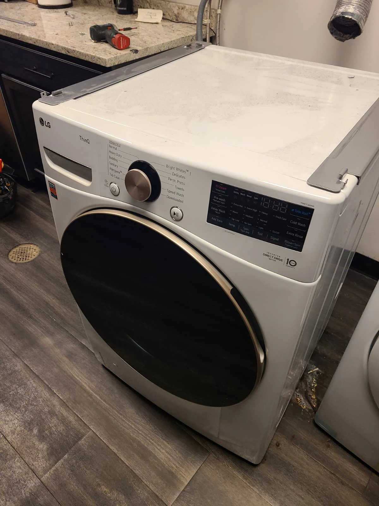
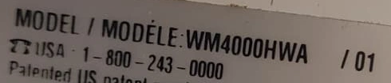
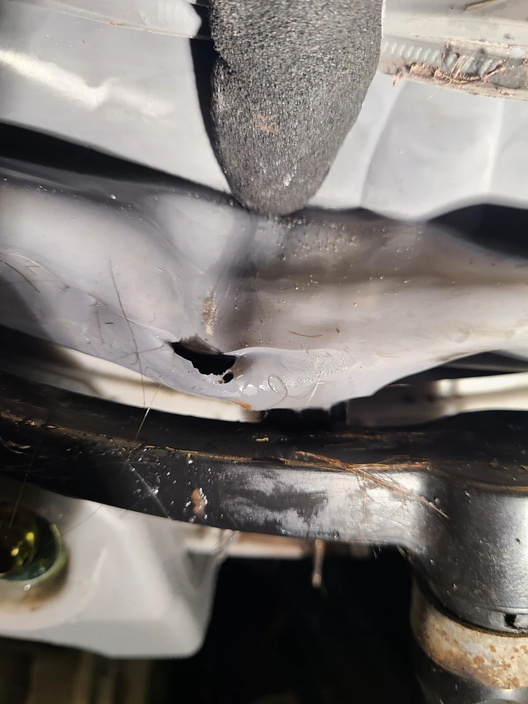
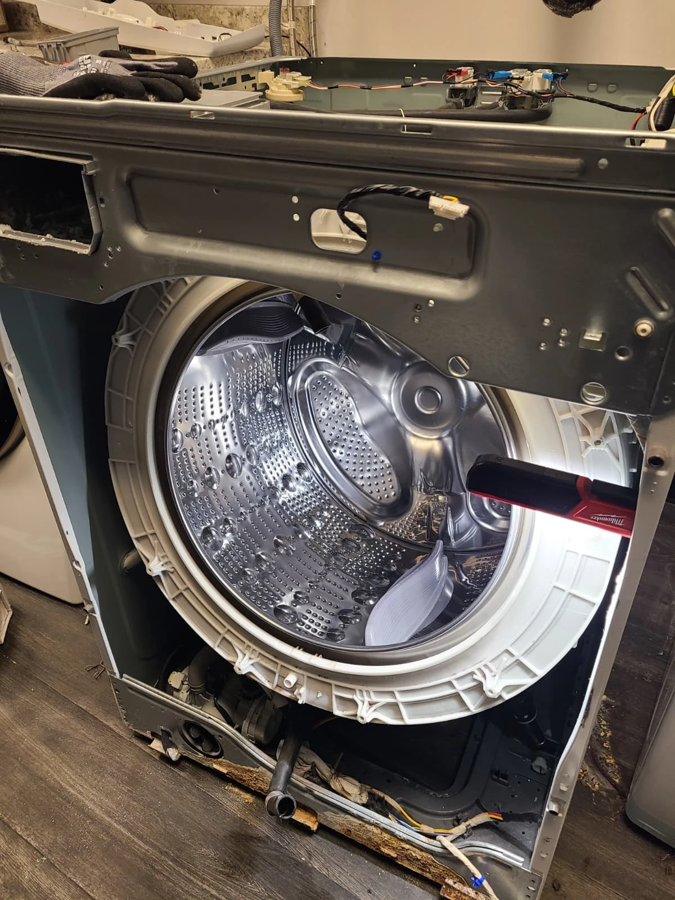
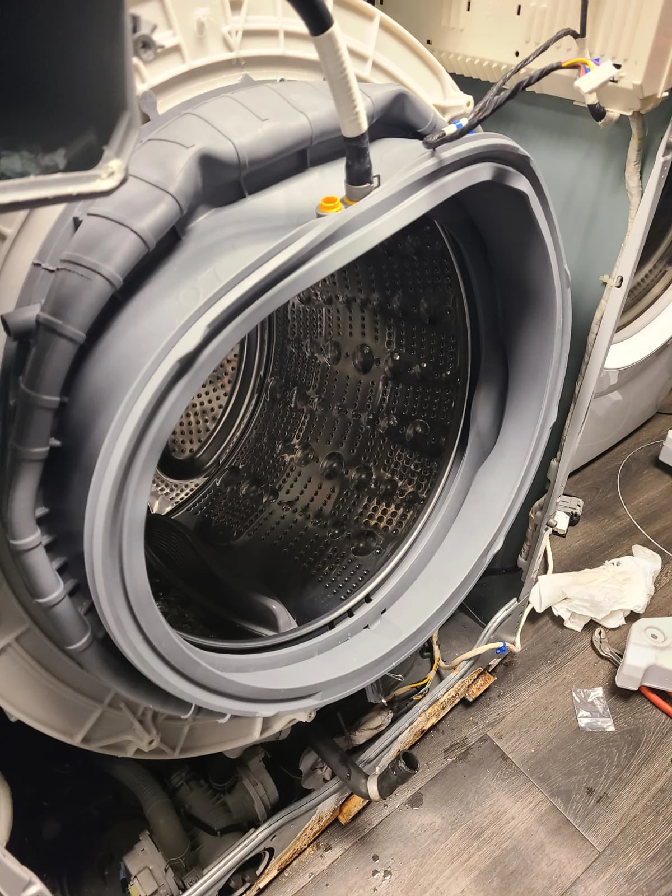
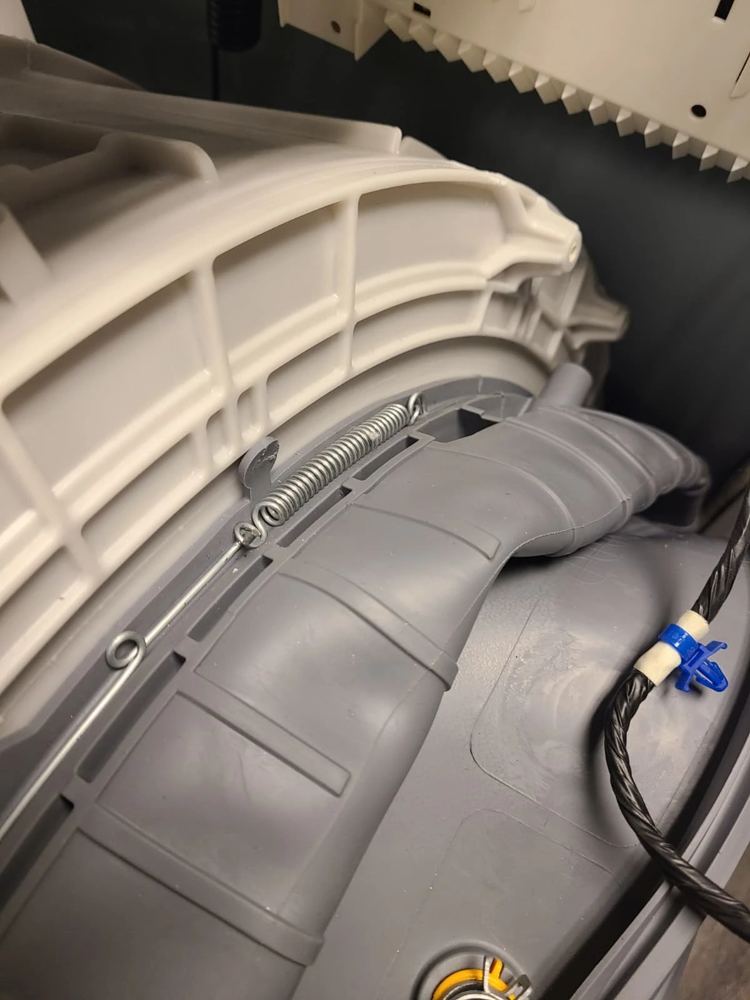
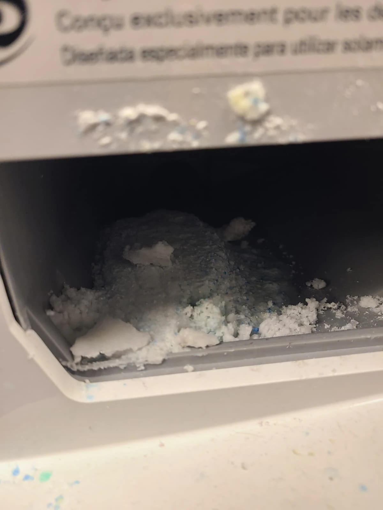
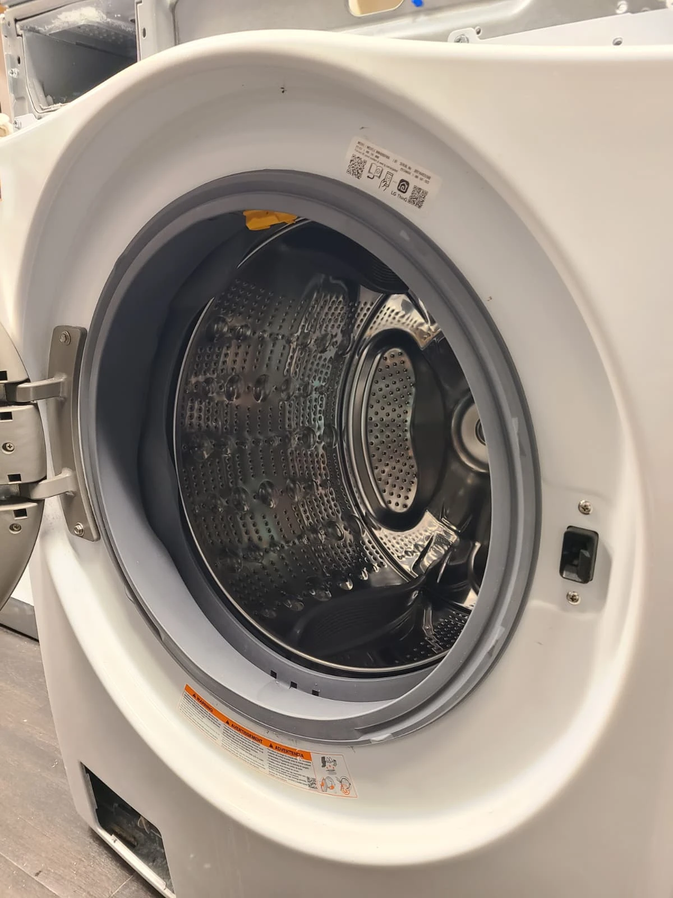

Water Was Running Beneath the Washer During Washing
A homeowner in Carmel, Indiana, contacted Alex Appliance Repair because water was escaping beneath their LG washing machine during the wash cycle. A puddle underneath an appliance shows where water ends up, but identifying the failed component requires tracing the leak on the individual machine.
We visited the home, diagnosed the problem and disassembled the washer for access. The finding was a hole in the lower section of the door boot gasket. The damaged gasket was replaced, and hardened detergent deposits were removed from the dispenser. After reassembly, all cycles were tested and the area beneath the machine was checked. The washer worked properly with no remaining leak.

Model Identification: LG WM4000HWA
The original appliance label identifies this front-load washer as LG WM4000HWA, with revision 01 shown beside the model. The photograph here is a crop of the actual model-number area. It preserves the printed identification and leaves the serial number outside the crop.
The model and the timing of a leak are useful details when requesting service. In this case, the customer specifically reported water during washing. That gave the service request a clear starting point, while the inspection established the damaged door gasket as the repair finding. The repair and this article are dated October 31, 2026.

The Leak Source: A Hole in the Lower Door Gasket
The close-up service photograph shows an opening through the rubber in the lower part of the original door boot gasket. This flexible seal surrounds the front opening of the tub. The visible damage matched the diagnosed leak problem and made replacement necessary on this washer.
A gasket can look intact around much of the door while having damage in a less visible fold or lower section. Here, the photograph records the specific defect found during diagnosis. The repair addressed that defect with a new gasket. The service record does not establish what originally punctured or tore the rubber, so the cause of the damage is not assumed.
Removing the Damaged Boot and Installing the New Gasket
The washer was disassembled to reach the door boot and its attachment points. The damaged gasket was removed and a new one installed. The following photographs show the exposed tub opening without the gasket and the replacement fitted around the opening, documenting the main stages of this leak repair.


The door boot is also called a door seal, bellows or rubber door gasket. These names describe the same component serviced here. The diagram in the Visit Overview places it within the front-load washer assembly, while the original photographs show the work on this particular LG machine in Carmel.

Securing the Replacement Door Seal
The replacement boot was fitted and secured as the washer was put back together. This close-up shows the retaining spring at the gasket attachment area during installation. The wider photograph in the previous section shows the new rubber around the tub opening before the front of the machine was fully reassembled.
Fitting the new seal was one part of completing the job. The washer also needed to be reassembled and operated so its water-containing components could be checked in use. The final verification therefore included cycle testing and an inspection beneath the machine, where the homeowner had originally noticed the escaping water.

Cleaning Hardened Detergent From the Dispenser
The detergent dispenser contained hardened pieces of powdered laundry detergent. The photograph shows those deposits before cleaning. We removed the accumulated material and cleaned the dispenser as part of this service, then completed reassembly of the washer.
The dispenser cleaning and gasket replacement were separate parts of the visit. The confirmed leak finding was the hole in the lower door boot; the detergent buildup was an additional condition that was cleaned. Keeping that distinction clear explains the work accurately without suggesting that the powder deposits caused the tear in the rubber.

All Cycles Tested and No Leaks Underneath
After the new door boot gasket was installed and the dispenser cleaned, the washer was reassembled and all cycles were tested. We also checked beneath the machine for water. The washer operated properly, and no leakage remained. The successful repair was completed in Carmel on October 31, 2026.
That final check returned to the original complaint: water running under the appliance during washing. Replacing the damaged seal corrected the diagnosed problem, and the post-repair inspection confirmed a dry area beneath the washer during testing. The photograph shows the front panel refitted around the replacement gasket during the reassembly sequence.
Questions About This LG Washer Leak Repair
Why was water leaking beneath this LG washer?
Diagnosis found a hole in the lower section of the door boot gasket. The customer had reported water running beneath the washer during the wash cycle.
What was replaced?
The damaged door boot gasket was replaced with a new one. This component is also known as the door seal or bellows.
Was the detergent dispenser replaced?
No. Hardened detergent deposits were removed and the dispenser was cleaned. The replacement component in this repair was the door boot gasket.
Did detergent buildup cause the gasket damage?
That was not established. The hole in the gasket and hardened detergent in the dispenser were separate findings. The gasket was replaced and the dispenser cleaned.
Was the leak checked after reassembly?
Yes. All cycles were tested and the area beneath the washer was inspected. The machine worked properly and no remaining leak was found.
Does every LG washer leak require a new door gasket?
No. This was the diagnosis for this LG WM4000HWA. Another washer with water underneath needs an inspection to locate its own leak source before repair work is recommended.
LG Washing Machine Leak Repair in Carmel, Indiana
If your LG front-load washer leaks during washing, share the model number, when the water appears and where you notice it. Those details help describe the problem when arranging service. We explain the diagnosis and estimate before approved repair work.
See our washer repair services in Carmel, LG appliance repair services and recent repair stories for more examples of local service.
Alex Appliance Repair is an independent appliance repair service operated by Aksenov LLC. Call (463) 248-8429 to discuss your washing machine.
Book washer repair in Carmel